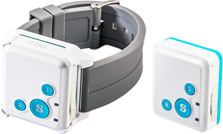
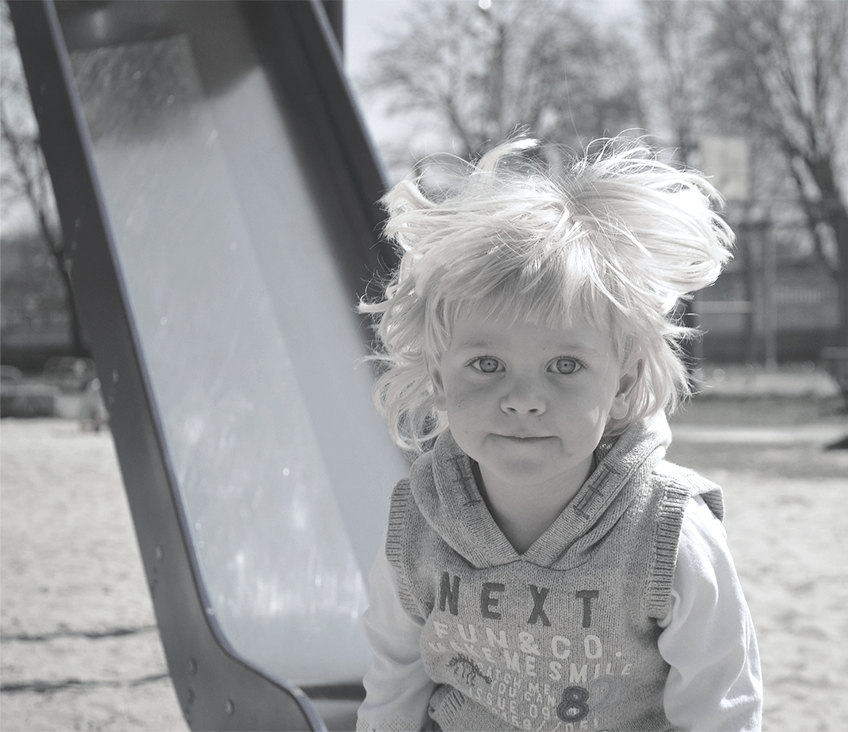
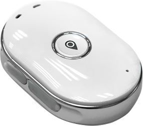
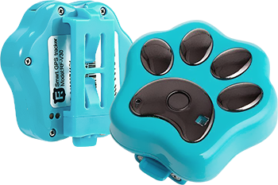
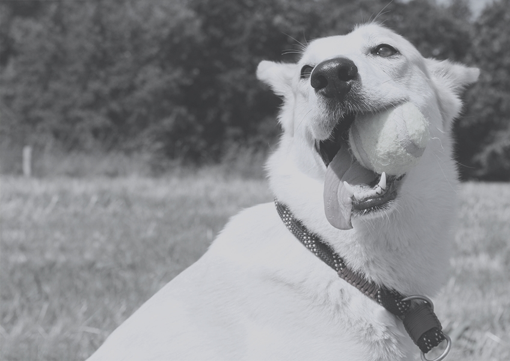

ВАШ БИЗНЕС ПОД КОНТРОЛЕМ!
Смарт часы для детей с GPS
Подарите смарт часы своему ребенку
Вы всегда будете знать его местонахождение:
где он задержался по дороге со школы домой,
добрался ли вовремя на тренировку.
Часы с GPS трекером передают сигнал
в режиме реального времени.


Функции детских умных часов:
- Передача сигнала GPS на смартфон. Часы работают в общей системе с приложением, которое можно бесплатно скачать для IOS или Android.
- Будильник. Можно зафиксировать контрольное время для сигнала. Напоминалка сработает и даст знать, что ребёнку пора идти домой с прогулки, собираться в спортивную школу или на другой кружок.
- 3 способа передачи сигнала: GPS, LBS, AGPS работают одновременно.
- Узнать местоположение ребёнка можно также на googlemaps, которые установлены на вашем смартфоне
- Настройка для получения SMS, в котором будет указано местоположение.
- Возможность осуществлять голосовой вызов и вызов на номер телефона, который привязан к часам.
- При срабатывании кнопки SOS, часы будут связываться с 5-ю абонентами по очереди, пока не получат ответ.
- Geo-забор. Часы предупредят вас, если ребенок нарушил границы, установленной вами зоны безопасности.
- Возможность принять входящий звонок при нажатии на любую кнопку.
ЦЕНА от 478
руб.
Gps трекер
Главная функция минитрекеров:
передача информации о местоположении ребенка на смартфон кого-то из родителей.
GPS трекер поможет всегда знать местонахождение вашего ребенка.
Это изящное устройство с современным
дизайном в виде брелока. Его легко спрятать в рюкзаке,
сумке или во внутреннем кармане куртки.
Также трекер будет очень полезен, если у вас есть пожилой член семьи.
Вы всегда без опасения сможете отпустить бабушку, дедушку или пожилого родителя на
прогулку и проследить его маршрут следования.
На приборе есть тревожная кнопка, которая легко наживается.
На приборе есть тревожная кнопка, которая легко наживается.
В экстренном случае ребёнок или пожилой человек может мгновенно связаться с вами.
Есть возможность осуществления голосовой связи.

Параметры:
- Gps чип: встроенный;
- точность сигнала: 5-15 м;
- частота: GSM 850/900/1800/1900 мГц;
- водонепроницаемость: IP65;
- режим: быстрый, стандарт, энергосберегающий;
- поиск: поддержка поиска в режиме реального времени;
- отключение: дистанционное;
- поддержка: бесплатное приложение для Android и IOS;
- маршрут: сохранение данных в архиве до 3-х месяцев.
ЦЕНА от 478
руб.
GPS трекер для собак
Подарив четвероногому другу поисковый трекер-брелок,
вы будете не только знать местонахождение питомца,
но и сможете быстро разыскать «потеряшку».
Устройство недорогое, но изготовлено из качественных материалов. Брелок можно прикрепить на ошейнике или попоне собаки.
После этого прибор нужно синхронизировать с мобильным устройством через беспроводное соединение Bluetooth под iOS/Android, и вы будете получать сигнал в режиме реального времени.


Функции трекера:
- Установление специальной безопасной зоны. Если ваш питомец ее покинет, вы получите сообщение в виде SMS или уведомления в приложении
- Прибор водонепроницаемый. Вы можете не беспокоиться, если на улице дождь или собака захотела искупаться в речке.
- На приборе есть яркий светодиодный маячок. Поэтому в тёмное время суток ваш питомец всегда будет виден. Подсветка включается автоматически.
Зарядить устройство можно от сети или от ПК.
ЦЕНА от 478
руб.